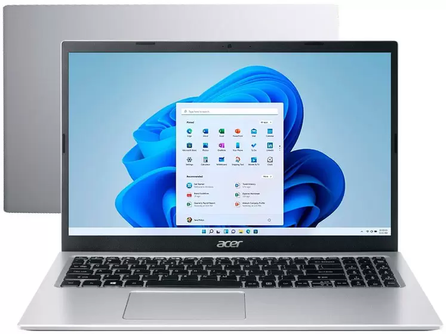
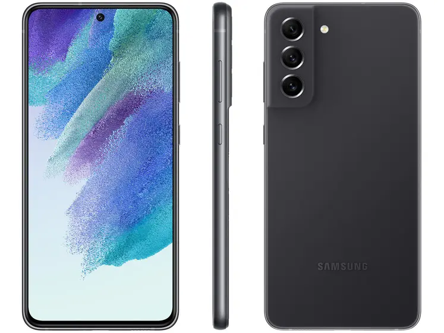
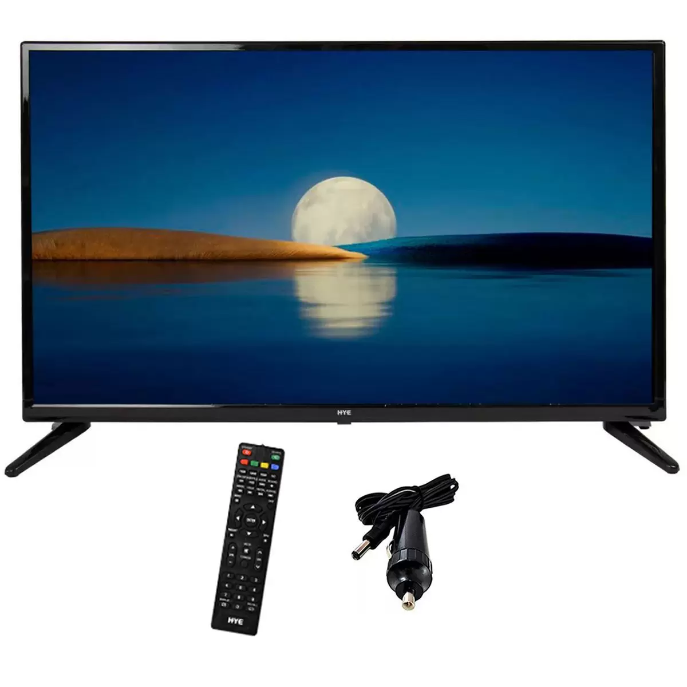
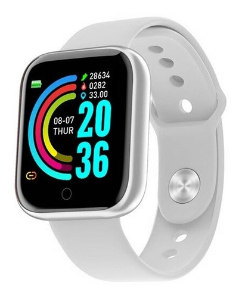
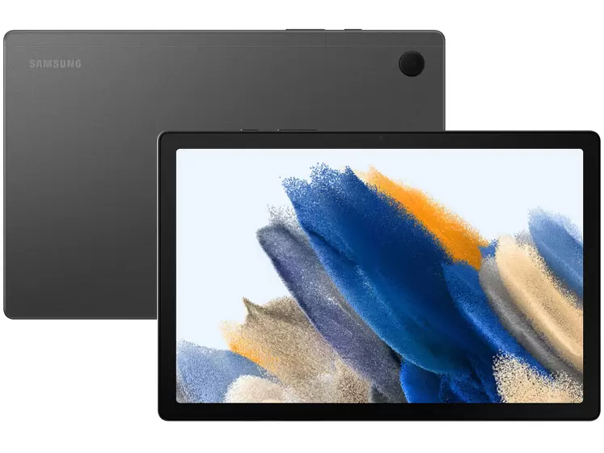
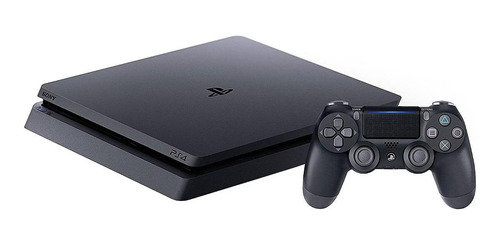

produtos
Notebook Samsung Book Intel Core i7 8GB 256GB SSD - 15,6” Full HD Windows 11
R$ 3.689,10
ou R$ 4.099,00 em 10x de R$ 409,90 sem juros
Contar com um bom notebook, certamente faz toda a diferença na hora de trabalhar, ou estudar, ou mesmo ter seus momentos de lazer não é? Por isso vale a pena conferir o Notebook NP550XDA-KH3BR da Samsung. Com processador Intel Core i7-1165G7 Processor (2.80 GHz up to 4.70 GHz 12 MB L3 Cache), ele possui 8GB de memória RAM e um SSD de 256GB, aumentando consideravelmente a velocidade do notebook quando comparado à um HD, tudo isso em uma tela Full HD LED antirreflexiva de 15,6". Com sistema operacional Windows 11 Home, o Samsung Book possui uma arquitetura de última geração e design elegante para quem busca qualidade, desempenho e proteção do investimento. Conta com portas de acesso à memória e unidade de armazenamento, facilitando o upgrade e proporcionando mais longevidade ao sistema. Atende aos mais diversos perfis de utilização, seja para estudo, trabalho ou uso geral.
Smartphone Samsung Galaxy S21 FE 128GB Preto 5G 6GB RAM
R$ 2.294,10
ou R$ 2.549,00 em 10x de R$ 254,90 sem juros
Traga a tecnologia para o seu dia a dia com o novo smartphone Galaxy S21 FE da Samsung. Com ele você tem todos os aplicativos necessários para controlar a sua rotina e compromissos na palma de sua mão. Conta com câmera traseira tripla de 12MP + 12MP + 8MP para que você possa registrar momentos únicos e inesquecíveis de festas, viagens ou encontros com pessoas queridas! Já com a câmera selfie de 32MP, é possível fazer fotos divertidas e com qualidade para compartilhar nas redes sociais. A tela de 6,4" com resolução FHD+ oferece uma experiência de visualização imersiva, seja ao ver seus vídeos, fotos ou filmes e séries favoritas com a melhor qualidade! O processador Octa-Core e memória RAM de 6GB tornam o seu uso ainda mais rápido e descomplicado, sem travamentos ou atrasos para jogar seus games ou utilizar aplicativos. Com memória interna de 128GB, ele traz mais espaço para salvar documentos ou arquivos sem preocupação. A tecnologia 5G e o Dual Chip te manterá sempre conectado aonde quer que você esteja, juntamente com sua bateria de 4500mAh com carregamento rápido de 25W, que acelera a sua carga. Sua cor preta destaca o design moderno do produto e combina perfeitamente com qualquer estilo, desde o mais clássico até o mais moderno!
Televisão 32 Tela Plana Smart
R$ 1.299,00
ou R$ 1.349,00 em 10x de R$ 134,90 sem juros
TV HYE 32" Premium com Resolução HD, imagens nítidas e vibrantes! Com cores vivas que ressaltam todos os detalhes!
Tecnologia avançada em sons e imagens para proporcionar melhor experiência de ver filmes, séries, eventos esportivos com ótima qualidade
Acompanha controle remoto para proporcionar total comodidade ao espectador
Acompanha conversor original de 110V/220V p/ 12V, possibilitando ao usuário o uso em tomadas 110V/220V
Através da interface HDMI é possível obter transmissões de áudio e vídeo com a qualidade máxima em que foram gravados. Além disso, tem entrada VGA, RF, Mini Jack 3.5mm e porta USB que permite a conexão pendrives ou dispositivos móveis compatíveis para acessar fotos, músicas, vídeos, entre outros arquivos.
O conversor digital integrado possibilita o acesso ao sinal de TV Digital nas zonas ou regiões em que já se encontra disponível.
Receptor de sinais digitais ISDB-T integrado.
Sistema de TV: PAL M/N, NTSC.
Smartwatch Smart Bracelet D20
R$ 195,50
ou R$ 195,50 em 3x de R$ 65,17 sem juros
com rede móvel caixa de plástico prata, pulseira prateado Tela de 1.3". Com GPS integrado. Com conectividade via Bluetooth e Wi-Fi. Capacidade da memória interna de 63GB. A duração da bateria varia de acordo com o modo de uso. Tecnologia, qualidade e sofisticação definem o smartwatch da Smart Bracelet D20. Suas diferentes funções fazem deste smartwatch um novo aliado para acompanhá-lo em sua rotina de esportes, trabalho e lazer.
Tablet Samsung Galaxy Tab
R$ 1.349,10
ou R$ 1.499,00 em 10x de R$ 149,90 sem juros
Tablet Samsung Galaxy Tab A8 10,5” 4G
Muita praticidade e desempenho é o tablet Galaxy Tab 8 - SM-X205NZAUZTO da Samsung. Se é a lazer, estudo ou a trabalho, ele entrega o que precisa na sua mão com agilidade! O tablet possui tela 10,5" e tecnologia 4G e wi-fi com mais possibilidades de conexões, acesse os conteúdos do dia-dia e esteja sempre conectado. A memória interna de 64GB para salvar diversos tipo de arquivos e apps, sistema operacional Android 11, processador UniSOC T618. Nas câmeras conta com 8MP traseiro e 5MP frontal para selfie e registros! Seu modo de uso pode ser vertical ou horizontal pra facilitar reprodução de vídeos, apresentações ou videochamadas.
PLAYSTATION 4
R$ 2.398
ou 10x de R$239,80 sem juros
inclui controle. Resolução de 1920px x 1080px. Memória RAM de 8GB. Conta com: 1 cabo de alimentação ca, 1 cabo usb, 1 cabo hdmi, 1 fone de ouvido monaural. A duração da bateria dos controles depende de como o produto é usado. Com seu console PlayStation 4 você terá entretenimento garantido todos os dias. Sua tecnologia foi criada para colocar novos desafios para jogadores novatos e especialistas.